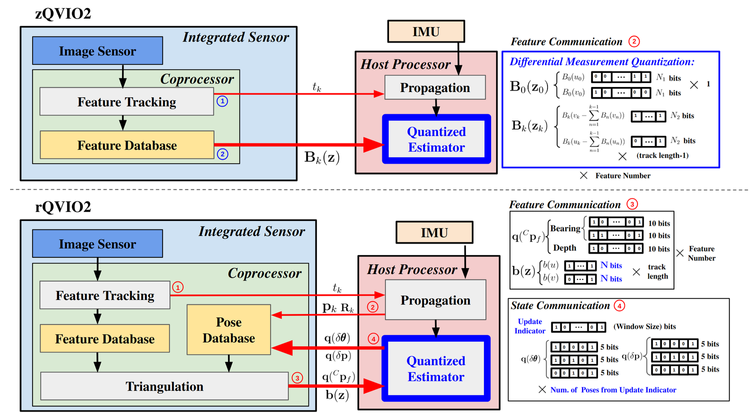
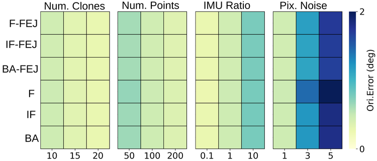
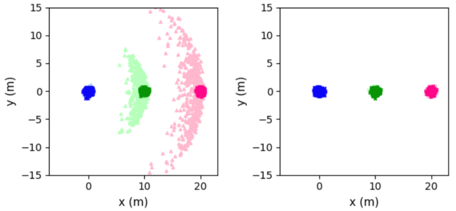
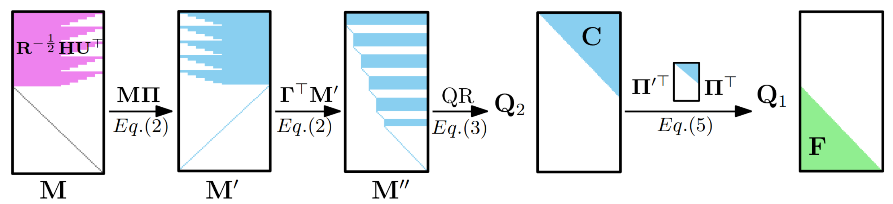
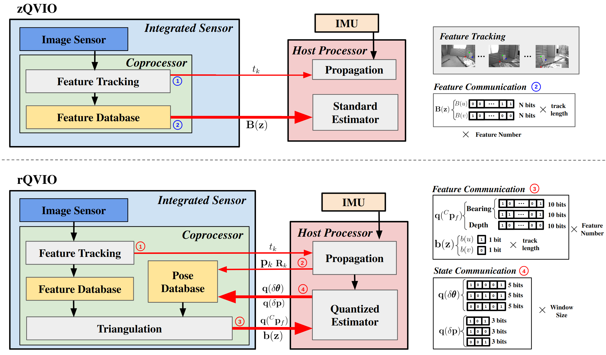
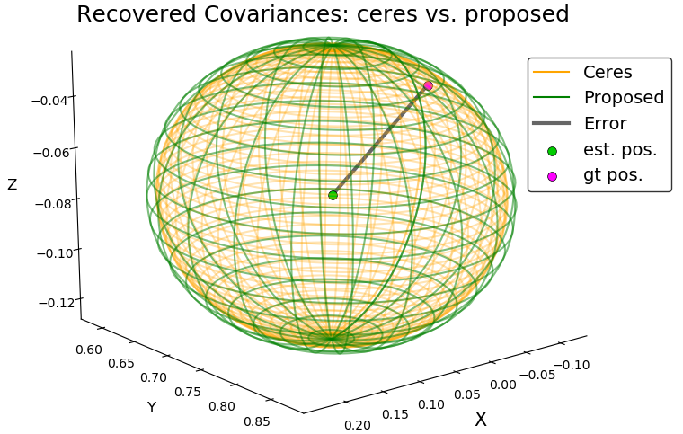
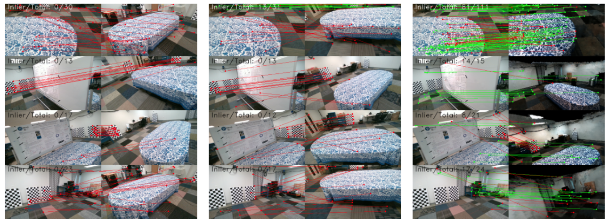
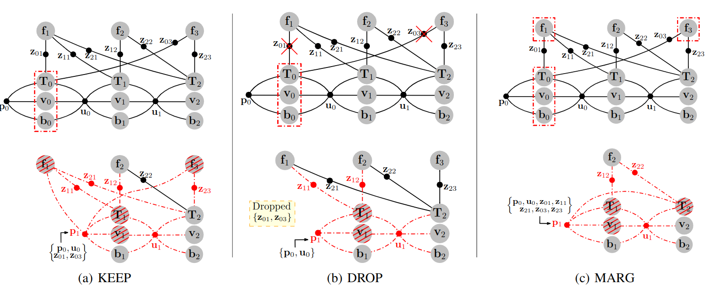

Research
My research interests focus on state estimation and spatial AI, including
probabilistic sensing, localization, mapping, 3D spatial perception.:
√VINS : Robust and Ultrafast Square-Root Filter-based 3D Motion Tracking Yuxiang Peng IEEE Transactions on Robotics (T-RO) ,
2025
pdf /
source code

QVIO2: Quantized MAP-based Visual-Inertial Odometry Yuxiang Peng IEEE International Conference on Robotics and Automation (ICRA) ,
2025
pdf

Is Iteration Worth It? Revisit Its Impact in Sliding-Window VIO Yuxiang Peng IEEE International Conference on Robotics and Automation (ICRA) ,
2025
pdf

Visual-Inertial State Estimation with Decoupled Error and State Representations Yuxiang Peng* Workshop on the Algorithmic Foundations of Robotics (WAFR) , 2024
pdf

Ultrafast Square-Root Filter-based VINS
Yuxiang Peng
[ICRA 2024 Best Paper Award Finalist (Robot Vision)]
IEEE International Conference on Robotics and Automation (ICRA) ,
2024
pdf /
tech report

Quantized Visual-Inertial Odometry
Yuxiang Peng IEEE International Conference on Robotics and Automation (ICRA) ,
2024
pdf

Fast and Consistent Covariance Recovery
for Sliding-window Optimization-based VINS
Yuxiang Peng IEEE International Conference on Robotics and Automation (ICRA) ,
2024
pdf /
tech report

NeRF-VINS: A Real-time Neural Radiance Field Map-based
Visual-Inertial Navigation System
Yuxiang Peng IEEE International Conference on Robotics and Automation (ICRA) ,
2024
pdf /
tech report

Optimization-based VINS: Consistency, Marginalization, and FEJ
Yuxiang Peng IEEE/RSJ International Conference on Intelligent Robots and Systems (IROS) ,
2023
pdf /
tech report /
slides /
talk
Monocular Visual-Inertial Odometry with Planar Regularities Yuxiang Peng International Conference on Robotics and Automation (ICRA) , 2023
pdf /
video /
slides /
talk /
dataset /
source code


{kind=link}